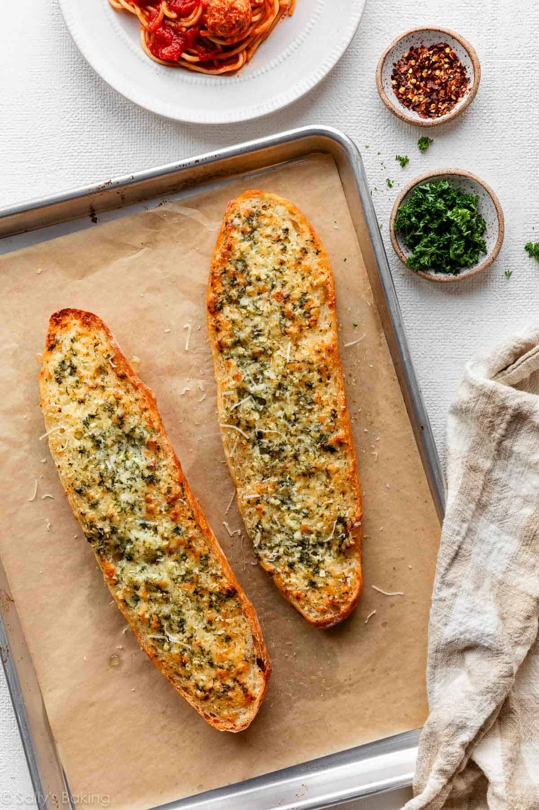

Garlic Bread Recipe
Prep Time: 5 Minutes
Cook Time: 10 to 15 Minutes
Total Time: 15 to 20 Minutes
Servings: 1 serving one loaf

Description
This is a great recipe to pair with a sandwich recipe like French Dip recipe for an added layer of flavor.
Ingredients
- Italian or French bread but any bread will do
- Butter 8 tablespoons
- Parsley curly or flat leaf
- Garlic 4 teaspoons, use fresh garlic for the best flavor
- Salt flaky sea salt is preferred but not required
- Parmesan Cheese an optional addition for a little zest, freshly grated for the best flavor
Steps
- Slice your bread horizontally and lay it cut side up on a foil lined baking sheet.
- Soften the butter in a bowl, get it to the point of easily being able to mash it with a fork without liquidating it.
- Add in the chopped garlic, salt (to your taste), parmesan cheese, and the chopped parsley and mix well. (Using a small hand mixer can be much easier if you have one)
- Once the butter, parsley, parmesan cheese, and garlic is well mixed spread the ingredient solution liberally over the cut halves of your bread. The back of a spoon, knife or offset spatula works well.
- Bake in the oven, middle rack 350°F, 175°C for 10 to 15 minutes; bake until the crust is golden brown and the butter is melted. Bake times may vary based on oven.
- Let the garlic bread rest for a few minutes, cut it into your desired size and enjoy!
This recipe goes great as the sandwich bread used in a French Dip recipe.
Lost? Click this link to take you home.